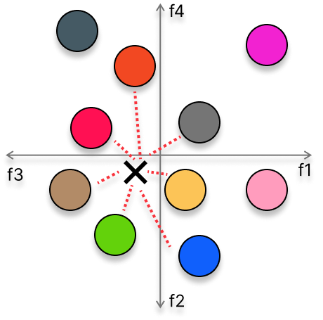
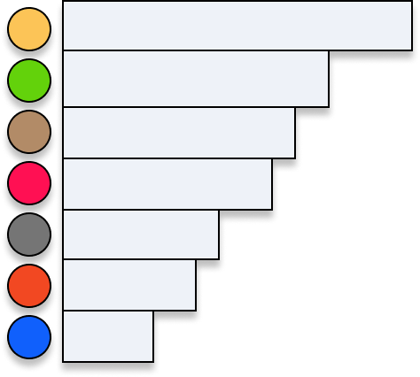
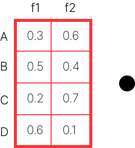
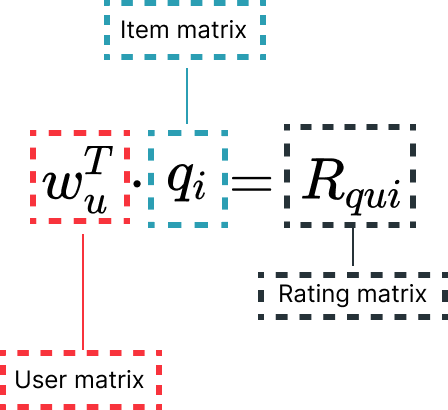

If you have ever used an e-commerce service or a streaming platform, you have already seen at least
one of these: recommended for you
, or other users have also bought this
. With
this article, we will give you an introduction to Recommender Systems (RS), and illustrate how new
deep-learning algorithmic techniques in this field work.
First, we use a toy example to illustrate how Matrix Factorization a relatively simply designed recommender system works. Then, we dive into two modern approaches: neural networks and deep learning models (via Guo et al's DeepFM). We visualize and discuss the distributions of the ratings data used to train these two models, focusing on how to use these visualizations to explain the differences in the models' competence in predicting a user's rating of a movies they've seen. Following this article, we hope that you will have some intuition and visual understanding of how RS work.
Recommender Systems can be defined as software tools and techniques that provide suggestions for items
to interact with a given user [1]. Usually, and so especially on the web, recommendations are
personalized to the specific user interacting with the system. By item
, we refer to
what the system is recommending to the user. This item could represent the next movie to watch, song
to listen to, the fastest path to a destination, or the best match for a particular job position (or your
next date!).
TO EDIT (unclear how this relates to above): It is important to note that non-personalized recommendations also exist, such as those you may have seen in print newspapers or magazines.
Recommender Systems: what are they?
In order to generate recommendations, RS require several types of input data. Examples of these may include users' preferences, items' characteristics, explicit feedback, implicit feedback, and essentially can be any measurable information about either the items or the users the RS is interested in modeling.
The recommendation process can be devided in four steps: querying, retrieving, filtering, scoring, and ranking.
How to use it: mouse over the different steps to know more about them.
The recommendation process starts when a user makes a query to an online platflorm.
Based on the query the items are retrieval with no specific orde from the database.

The elements retrieved are then filtered based on specific features of the items or the
users.

Finally, each item will be given a score and ranked based on it.
The most accessible data are explicit ratings, which include explicit input from the user regarding their level of interest in a product i.e. rating that the user gives to an item. Usually, explicit feedback can be represented by a sparse matrix, since users are likely to rate only a small percentage of entirety of items a dataset includes. We can't expect a single user to have seen every possible movie! But we can learn about their similarity to other users, and thus try to predict how this user would feel if they were to watch a new movie.
When explicit feedback is not available, it is possible to use implicit feedback that reflects user behavior. Examples of implicit feedback include the browser history on a website, the number of clicks made on a given page, or a user's pattern of mouse movement. As opposed to explicit feedback, implicit feedback can be represented by a densely filled matrix, perhaps because we have more say in how this data is to be collected or organized.
Classical recommender systems can be grouped into two main approaches: content-based (CB) and collaborative filtering (CF).

Content-based filtering The main idea of content-based filtering is to generate a recommendations using additional information about the given user and item, through what we call features, which explain the observed interaction between a user and an item.
Collaborative filtering The main idea of collaborative filtering is that past user-item interaction, like providing ratings to movies watched in the past, is sufficient to detect similar users and/or items, cluster them, and make new predictions based on the similarity existing within a cluster [6].
WRITE SOMETHING HERE
| Content-based | Collaborative Filtering | |
|---|---|---|
| Advantages |
|
|
| Disadvantages |
|
|
An interpretable collaborative filtering recommender system: Matrix Factorization


The user matrix stores the users' item feature
preference.
The item matrix stores the movies' features
scores.
Matrix Factorization is a class of collaborative filtering techniques [3] it is used to generate latent features (embeddings) when two different entities are multiplied together. In its most simplistic form, Matrix Factorization characterizes both the items and the users by a vector of factors (matrixes). This kind of method has become popular, since it combines robust scalability with predictive accuracy, while offering flexibility for modeling real-life scenarios [2]. Moreover, since it is based on pure math it can be classified as an interpretable recommendation method.
Each item i and user u are associated with a vector qi and wu, respectively. For a given item, the corresponding vector measures the degree to which a feature represents the item dataset. Similarly, the user vector wu measures the degree of interest the user has in the item dataset.
The interaction, defined as the interest of the user u in item i
, is then captured
by the dot product of these two vectors. Once all the dot products are computed, it becomes possible to
rank the predicted ratings and identify the best item to recommend to any given user.

Let's consider the following example: you are planning a movie night with your friends Anna, Jonny, and Kimi. You know that Anna likes both horror movies and comedy, Jonny has a strong preference for comedy, and Kimi prefers horror movies but also enjoys watching comedy from time to time. To find the best movie that everyone will enjoy, you are going to use a recommender system based on the Matrix Factorization techniques described above.
How to use: adjust your preferences on the movie genres (comedy and horror) and then
click on Calculate Matrix Factorization
to see how your preferences are alligned with the one
of your friends.
How to read the results: to facilitate the decision of which movie to watch, you just need to look at the last row of the Matrix Factorization that represent the average of the predictive rating.
Comedy preference:
Horror preference:
| User | Comedy | Horror |
|---|---|---|
| Anna | 0.6 | 0.5 |
| Jonny | 0.7 | 0.1 |
| Kimi | 0.4 | 0.9 |
| You | 0.5 | 0.5 |
| Item | Comedy | Horror |
|---|---|---|
| Zombieland | 3 | 2 |
| Modern Times | 5 | 1 |
| The Grudge | 1 | 5 |
While Matrix Factorization can produces some good results in a small amount of time, this methods has the following main disavantages:
- Cold start problem: the matrix can not handle fresh items, such as new movies or new users.
- The relevance of recommendation: Matrix Factorization uses the dot product to recommend the items, if all the users have interact with the same item, the recommendation will focus on that item.
- Hard feature encoding: to generate the recommendation, we have to explicitly provide the system with the user preference and item features.
Modern Recommender Systems
Modern recommender systems have to consider many features that can be:
- Categorical like userID, itemID, brand, genre, language, etc.;
- Numerical like price, delivery time, number of reviews, avg of the reviews, etc.;
- Unstructured like keywords, colors, material, etc.
An embedding approach on matrix factorization: EmbeddingMF
In a real-world scenario, we do not explicitly know all the preferences of every user and all the characteristics of a movie to make a optimal recommendation. However, we can use gradient descent to learn the latent factors (implicit characteristics) for each movie and user based on user-movie ratings. Using the “Dot Product + Bias” approach, we first create two embedding matrices. (1) A user embedding matrix (U) containing a user per row and n-factors (columns) representing the user features. (2) A movie embedding matrix (M) where a row contains n-factors (columns) that describe a specific movie (row). By setting the same amount of columns in each matrix, we can multiply the two embedding matrices (UxMT). Next, we can add the user and movie bias terms. This results in the rating for users and movies. Since these latent factors are initialized with random numbers, the initial ratings that are computed by the model differ largely from the ground truth but are minimized during training.
The model consists of a user matrix of size (n_users x 128) and a movie matrix of size (n_movies x 128) and a user bias (n_users) and a movie bias (n_movies). We randomly initialize the latent factors for every user and movie with a mean of 0 and a standard deviation of 0.01. After the multiplication of users and movies we apply a sigmoid range that squeezes the results between 0 and 5.5 so the model can focus on learning something within this range. We trained the model over 15 epochs using the MSELoss, a learning rate of 0.005, and a weight decay of 0.1 which helps to prevent the model from overfitting.
Deep Learning Recommender System: DeepFM
The adoption of deep learning models has been on the rise in every domain, including recommender system. The first model that generated state of the art (SOTA) results was Wide&Deep [5], a deep learning model made by Google in 2016. A complete timeline of SOTA model can be seen in the figure below. For the goal of this article, we are going to consider as a deep learning model, the Factorization-Machine based neural network (DeepFM), developed by Huawei in 2017 [6].
Architecturally DeepFM consists of two components, a Factorization Machine (FM) component and a deep component that share the same input. For a feature i, a scale wi is used to weigh its order-1 (linear) importance , a laten vector Vi is used to measure its impact of interactions with other features. The laten vector is then fed in the FM component to model order-2 (pairwise) feature interactions. The result of this is then fed in the deep component to model the high-order feature interactions. all parameters are trained joyintly for the combined prediction that is represented by the following formula:
A visual representation of the architecture is shown in the image above.
Factorization Machines Are model class that combines the advantages of Support Vector Machines (SVM) with factorization models [7]. Factorization Machine are are a general predictor that model all interactions between variables using factorized parameters. By doing so, they are able to estimate interactions even in problems with huge sparsisty as is the case in recommender systems.
Deep component The deep component is a feed-forward neural network which is used to learn high-order feature interactions. Two interesting feature of this deep learning structure are:
- While the lengths of different input field vectors can be different, thei embedding are of the same size.
- The latent feature vectors, output of the FM, is now use as network weights which are learned and used to compress the input fields vector to the embedding vectors.
TODO: add figure about DeepFM architecture.
One recommender can not rule them all: All models are wrong, but some are useful
We have trained the two models described above, the EmbeddingFM and the DeepFM, with the task of generating a recommendation to a test set of 100k entries. By plotting the distribution of the true and predictive rating, see figure below, it is possible to notice that the distribution of the DeepFM is skewed towards the rating 3, while the one of the EmbeddingFM is skewed towards the 4 as the true ratings.
To better understand these results, we decide to validate our approaches using the Root Mean Squared Error (RMSE), one of the most used metrics in the Recommender System field. RMSE is typically used when the developer wants to evaluate a predicted score, like the predictive rating of a movie, and compare it to a ground truth (true rating). Compared to other metrics, RMSE but more emphasis on larger absolute error. Lower RMSE better is the recommendation accuracy [1, 8].
By plotting the RMSE of the two models it is possible to notice that both the two models described
above present a high RMSE value at the two extremes (prediction rating of 1 or 2 and rating of 5). While
the error on rating 1 and 2 can be explained considering that people are more willing to share
positive
experiences than negative ones
[9].
We define a perfect recommendation systems as system that will recommend only movies that the user will 100% like and rate as 5. The above plot, on the contrary, it shows that both models are not perfect in recommending that kind of movies. Based on this evidence and our definition of perfect recommender system, we decide to use the explain by example methodology to explain how the two models generate the movie recommendations for a user that are predicted with a rating of 5.
To support this direction, we are going to use a custom Venn Diagram with three sets: true rating (movie rated 5 by the users), predicted ratings from the embedding matrix factorization, and predicted ratings from the DeepFM model.
SOMETHING MISSING HERE
How to read: the movies are represented by dot in the different sets of the Venn Diagram. The line that starts from the center represent the error that has been made.
EmbeddingFM
DeepFM


The model over estimate the rating that the user will give.

The model under estimate the rating that the user will give.
How to interact: Lay over one of the point to discover what is the movie name and the predicted score.
Of the above plot, what it is interesting to notice are the movies in the bottom left of the true rating set and the movies in the intersection between the two recommendation systems. The first movies represent movies that the user has liked and rate 5 but both models will not recommend to the user. The latter ones, is a movie that both models think that the user will like and rate 5 but in reality the users will not like.
To explore more in details the case where the movie recommended and the user preferences do not overlap we can plot the rating distribution on the training data together with the user rating. If we consider the case about the movies that are recommended but the user will not like, it is possible to see is that the model suffer from some kind of bias that is propagate starting form the training data, like the movie is very popular across the other users that the dataset includes in the training data. For the other case we can see that the movie that the user like but the recommender is not recommending to him/her are movies that in the training data have not good rating (mean of 2.24).
Conclusion
While recommender systems aims in generating a personalized experience on the web, the model are not trained on a single user but on a group. With this article we have shows that .... Thanks to this explnation we tried to show that if the focus shift from data/model centric to more human centric the models are not really generate personalized recommendations.
Acknowledgments
Text
Further Reading
text
References
[1] Ricci, Francesco, Lior Rokach, and Bracha Shapira. "Introduction to recommender systems handbook." Recommender systems handbook. Springer, Boston, MA, 2011. 1-35.
[2] Koren, Yehuda, Robert Bell, and Chris Volinsky. "Matrix factorization techniques for recommender systems." Computer 42.8 (2009): 30-37.
[3] Lee, Daniel D., and H. Sebastian Seung. "Learning the parts of objects by non-negative matrix factorization." Nature 401.6755 (1999): 788-791.
[4] Glauber, Rafael, and Angelo Loula. "Collaborative filtering vs. content-based filtering: differences and similarities." arXiv preprint arXiv:1912.08932 (2019).
[5] Cheng, Heng-Tze, et al. "Wide & deep learning for recommender systems." Proceedings of the 1st workshop on deep learning for recommender systems. 2016.
[6] Guo, Huifeng, et al. "DeepFM: a factorization-machine based neural network for CTR prediction." arXiv preprint arXiv:1703.04247 (2017).
[7] Rendle, Steffen. "Factorization machines." 2010 IEEE International conference on data mining. IEEE, 2010.
[8] Isinkaye, Folasade Olubusola, Yetunde O. Folajimi, and Bolande Adefowoke Ojokoh. "Recommendation systems: Principles, methods and evaluation." Egyptian informatics journal 16.3 (2015): 261-273.
[9] 2018 Customer Experience, https://www.sitel.com/report/2018-cx-index/
Reuse
Diagrams and text are licensed under Creative Commons Attribution CC-BY 4.0 with the source available on GitHub, unless noted otherwise. The figures that have been reused from other sources don’t fall under this license and can be recognized by a note in their caption: “Figure from …”.